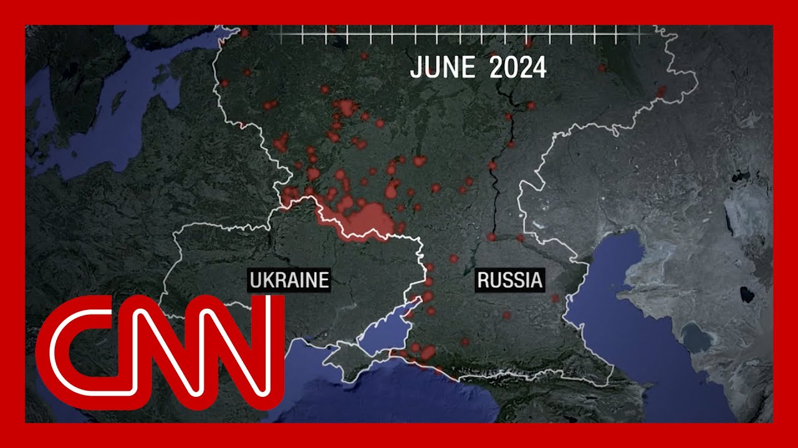

【乌克兰日益壮大的空中力量如何重新定义现代战争】
Summary: Ukraine braces for further attacks as Russia responds to Kyiv's drone strikes, with dramatic footage showing over 400 drones and 40 missiles fired.
摘要： 乌克兰准备应对更多袭击，俄罗斯对基辅的无人机袭击作出回应，戏剧性画面显示超过400架无人机和40枚导弹被发射。

⏱️ Estimated Reading Time: 15 min
📚 高考3500生词 📚 雅思生词 📚 托福生词 📚 GRE生词 📚 UP主推荐生词
Ukraine on edge.
乌克兰处于紧张状态。
President Volodymyr Zelensky, sounding the alarm, warning that Putins attack on Ukraine is not over, bracing for what will come next.
总统弗拉基米尔·泽连斯基发出警告，称普京对乌克兰的袭击尚未结束，正在为接下来的行动做准备。
It comes after Russia's massive and widespread strikes overnight.
这是在俄罗斯夜间发动大规模广泛袭击之后发生的。
We have some dramatic new footage.
我们有一些戏剧性的新画面。
You can see that there more than 400 drones, 40 missiles fired across nine regions.
你可以看到超过400架无人机和40枚导弹在九个地区发射。
And these are the scenes from Kyiv where explosions lit up the sky.
这是基辅的场景，爆炸照亮了天空。
This is one of the largest attacks of the war so far.
这是迄今为止战争中最大规模的袭击之一。
The strikes, it seems a part of the response to Ukraine taking out so many of strategic bombers.
这些袭击似乎是乌克兰摧毁大量战略轰炸机的回应的一部分。
They say 41 of Putins bombers destroyed all carried out by drones, a weapon that Ukraine, of course, has used to completely redefine warfare itself.
他们称41架普京的轰炸机被摧毁，全部由无人机执行，乌克兰当然用这种武器彻底重新定义了战争本身。
Katie Glaze is OutFront with a CNN investigation into exactly how they're doing it right now.
凯蒂·格雷兹正在前线进行CNN调查，了解他们目前的具体做法。
This attack, more than 18 months in the making, is a sign Ukraine has changed the face of modern warfare, damaging air bases deep within Russian territory.
这次袭击酝酿了18个多月，标志着乌克兰改变了现代战争的面貌，摧毁了俄罗斯领土深处的空军基地。
A CNN analysis of thousands of drone strikes on Russia over the past three years, along with video and an exclusive interview.
CNN对过去三年数千次无人机袭击俄罗斯的分析，包括视频和独家采访。
We can coordinate our drones in Moscow, Moscow, etc., sheds light on how Ukraine's drone program has rapidly expanded since the start of the war.
“我们可以在莫斯科等地协调无人机”，揭示了乌克兰的无人机计划自战争开始以来如何迅速扩展。
In the first months, you can see the attacks are mainly along the border area, but by the end of the year they start hitting key military targets like this blast shown on surveillance footage at a fuel depot at Engels Airbase in December 2022.
最初几个月，袭击主要集中在边境地区，但到年底，他们开始袭击关键军事目标，如2022年12月恩格斯空军基地燃料库的爆炸监控画面所示。
Five months later and the missions become more ambitious.
五个月后，任务变得更加雄心勃勃。
This bold drone attack in May 2023 even damaged the roof of the Kremlin, the heart of the Russian government, and over 400 miles from Kyiv.
2023年5月这次大胆的无人机袭击甚至损坏了克里姆林宫的屋顶，这是俄罗斯政府的心脏，距离基辅400多英里。
Drones are now frequently flying over Moscow, bringing the terror of war home to the Russian people.
无人机现在频繁飞越莫斯科，将战争的恐怖带给俄罗斯人民。
At the same time, Ukraine is maintaining pressure on Russia's war supplies wherever they are stored.
与此同时，乌克兰对俄罗斯的战争物资保持压力，无论它们储存在哪里。
In late summer of 2023, they targeted Pskov airbase in northern Russia beyond Moscow, in satellite imagery taken shortly after.
2023年夏末，他们瞄准了莫斯科以北的俄罗斯北部普斯科夫空军基地，卫星图像拍摄于不久后。
You can see the damaged planes.
你可以看到受损的飞机。
By 2024, the number of drones getting sent into Russia is soaring.
到2024年，进入俄罗斯的无人机数量激增。
In June alone, over 1000 launched.
仅6月就发射了1000多架。
According to CNN analysis, Ukraine's muscle comes from a coordinated national effort to make combat drones ready to be sent into Russia.
根据CNN分析，乌克兰的力量来自全国协调努力，使战斗无人机准备好进入俄罗斯。
We spoke exclusively to one of these manufacturers who told us how the war kick started Ukraine's national drone unit.
我们独家采访了其中一家制造商，他告诉我们战争如何启动了乌克兰的国家无人机部队。
Now we I think Ukraine, is a leader in this area in our world.
“现在我们，我认为乌克兰，在这个领域是世界领先者。”
Which drones were used last weekend is still a tight lipped secret.
上周末使用了哪些无人机仍然是一个严格保密的秘密。
But experts say his drones are identical to those seen in images of the attack, and were most likely the ones used.
但专家表示，他的无人机与袭击图像中看到的完全相同，很可能是使用的那些。
We can produce very good drones for special mission, and yet we will protect our country from, Russian aggression.
“我们可以为特殊任务生产非常好的无人机，同时我们将保护我们的国家免受俄罗斯的侵略。”
He shares some extraordinary insights into how it was possible for Ukraine to target so deep into Russia, hitting an air base 2500 miles away.
他分享了一些非凡的见解，说明乌克兰如何能够深入俄罗斯2500英里袭击空军基地。
Is it possible to remote control that drone from Ukraine?
“是否可以从乌克兰远程控制那架无人机？”
While the drone was in Bologna airbase, for example.
“例如，当无人机在博洛尼亚空军基地时。”
No problem.
“没问题。”
We can coordinate our drones in, in, in, in Moscow, Moscow, etc.
“我们可以在莫斯科等地协调无人机。”
We need to link across satellite and across, mobile dollars.
“我们需要通过卫星和移动网络连接。”
Or maybe our pilot will say nearby.
“或者我们的飞行员可能会说在附近。”
And the success of the program is apparent by the damage left behind.
该计划的成功从留下的破坏中显而易见。
Multiple air bases hit some in Russia's Far East.
多个空军基地被击中，其中一些在俄罗斯远东地区。
Ukraine claims it inflicted $7 billion worth of damage on Russian weapons, though that number has not been verified.
乌克兰声称对俄罗斯武器造成了70亿美元的损失，尽管这一数字尚未得到证实。
Even so, the details of this stealthy operation are extraordinary: drones smuggled in on wooden crates, then driven across Russia in containers, catching locals by surprise as drones flew out of trucks to launch the assaults.
即便如此，这次隐秘行动的细节非同寻常：无人机装在木箱中走私，然后用集装箱运过俄罗斯，无人机从卡车飞出发动袭击，令当地人措手不及。
Russia now faces an even steeper challenge to its long held dominance of the skies.
俄罗斯现在对其长期以来的空中优势面临更严峻的挑战。
Katie Pugliese, CNN, London.
凯蒂·普格列塞，CNN，伦敦。
All right.
好的。
And joining me now is Seth Jones, national security expert and president of the center for Strategic and International Studies.
现在加入我们的是国家安全专家、战略与国际研究中心主席塞斯·琼斯。
Seth, you have just returned from reviewing frontline drone footage.
塞斯，你刚刚从前线无人机画面审查中回来。
You've done that with top military leadership from Ukraine.
你是与乌克兰高级军事领导层一起做的。
So you've seen things that none of us have actually seen.
所以你看到了一些我们都没有实际看到的东西。
What stands out to you from that from what you saw, from what you heard about what happened on those air bases?
从你所看到的、听到的关于那些空军基地发生的事情中，什么让你印象深刻？
Well, Aaron, what is really striking is how the Ukrainians used the Russian logistics system, including their mobile network, to first to smuggle drones into Russia itself and then to use the mobile system and the satellite system from Russian territory as they conducted strikes.
“嗯，亚伦，真正引人注目的是乌克兰人如何利用俄罗斯的后勤系统，包括他们的移动网络，首先将无人机走私到俄罗斯境内，然后在从俄罗斯领土进行袭击时使用移动系统和卫星系统。”
So, I mean, it's not just getting those platforms into Russian territory, but it's also taking advantage of what was available in Russia to strike targets.
“所以，我的意思是，不仅要将这些平台带入俄罗斯领土，还要利用俄罗斯现有的资源打击目标。”
And it really shows how vulnerable countries can be if those kinds of drones are smuggled inside of those countries, obviously more than just Russia.
“这确实表明，如果这类无人机被走私到这些国家内部，国家可能会多么脆弱，显然不仅仅是俄罗斯。”
Right.
“对。”
Well, and that and that sends a very sobering thought you just said there.
“嗯，这让你刚才说的话发人深省。”
So when you're with that top military leadership, though, you know, we have those big attacks overnight, some of the biggest since the war began in Kiev.
“所以当你和那些高级军事领导层在一起时，你知道，我们昨晚发生了那些大袭击，这是自战争在基辅开始以来最大的一些。”
Is that it?
“就是这样吗？”
I mean, what do they think Putin is going to do?
“我的意思是，他们认为普京会做什么？”
I mean, Trump made it very clear that Putin was going to do something and that she's fires off and which it was never really on.
“我的意思是，特朗普非常明确地表示普京会做点什么，而她发射了，这从来都不是真的。”
But but you get the point.
“但你明白重点。”
What does Ukraine think is going to happen?
“乌克兰认为会发生什么？”
Well, Erin, I think there are a few things.
“嗯，艾琳，我认为有几件事。”
One is the Ukrainian leadership.
“一个是乌克兰领导层。”
And I talked to the head of the office of the president, while he was in Washington this week.
“我和总统办公室主任谈过，他本周在华盛顿。”
They they do expect the Russians to conduct a range missile, ballistic missile and drone strikes against Ukraine, including Kiev, in large numbers.
“他们确实预计俄罗斯会对乌克兰，包括基辅，进行一系列导弹、弹道导弹和无人机袭击，数量庞大。”
That's the way the Russians respond.
“这是俄罗斯的回应方式。”
I don't think they expect to see any kind of a nuclear response, although Putin routinely threatens those.
“我不认为他们预计会看到任何核回应，尽管普京经常威胁这些。”
But I think at the end of the day the problem that the Russians have is they are not effectively conducting military operations.
“但我认为归根结底，俄罗斯的问题是他们在军事行动上没有有效进行。”
They're dying in really historic numbers, at least since World War two.
“他们死亡的人数确实具有历史意义，至少自二战以来。”
And so I think that's what the Ukrainian response is to keep fighting them on the battlefield.
“所以我认为这就是乌克兰的回应，就是在战场上继续与他们战斗。”
And that's where the Russians are at their biggest weakness.
“这就是俄罗斯最大的弱点所在。”
Okay.
“好的。”
So on that, you know, we haven't heard that sort of an in a while.
“所以关于这一点，你知道，我们有一段时间没有听到这种说法了。”
In fact, what we've heard is that in a war of attrition, Russia will win because they have more men.
“事实上，我们听到的是，在一场消耗战中，俄罗斯会赢，因为他们有更多的人。”
And it's just that simple.
“就是这么简单。”
And that it boils down to numbers and the numbers are horrible, but they don't favor Ukraine.
“这归结为数字，数字很可怕，但它们不利于乌克兰。”
So the longer this continues, the more it favors Russia, right?
“所以这种情况持续的时间越长，对俄罗斯越有利，对吧？”
That has become the narrative right out there.
“这已经成为外界的说法。”
But you've got new reporting and you're talking about struggles on the front line for Putin's forces to advance.
“但你有新的报道，你在谈论普京的部队在前线推进的困难。”
You've got numbers on the equipment that they've lost a lot more equipment than Ukraine, that the casualty numbers now approach a million for Russia.
“你有关于装备的数字，他们损失的装备比乌克兰多得多，俄罗斯的伤亡数字现在接近一百万。”
In fact, you gave us a chart that shows the daily average of casualties since the war began.
“事实上，你给了我们一张图表，显示了自战争开始以来的每日平均伤亡人数。”
And it all challenges the narrative that Putin can just continue and afford to go on indefinitely.
“这一切都挑战了普京可以继续并无限期承受的说法。”
You know, when you went through and looked at all these numbers right now, which do challenge the current narrative, what surprised you the most?
“你知道，当你现在查看所有这些数字时，它们确实挑战了当前的说法，最让你惊讶的是什么？”
Er, there were two things that surprised me and the and one of them was was one of the numbers that the president himself remarked out of our report in the Oval Office yesterday.
“呃，有两件事让我惊讶，其中一件是总统昨天在椭圆形办公室从我们的报告中提到的数字之一。”
One was just the sheer casualties that the Russians have suffered.
“一个是俄罗斯遭受的巨大伤亡。”
Nearly a million.
“近一百万。”
They'll hit the 1 million mark by June or July.
“他们将在六月或七月达到一百万。”
And also in a historical perspective the Russians have lost now more than five times the number of soldiers than in all Russian wars combined between the end of World War two and the beginning of their full scale invasion in February 2022.
“而且从历史角度来看，俄罗斯现在损失的士兵数量是二战结束到2022年2月全面入侵开始期间所有俄罗斯战争总和五倍多。”
I mean, 77 year period versus a three year period a little over three year period.
“我的意思是，77年与三年多一点的时间相比。”
Still five times the number that they've lost over the last three years.
“仍然是过去三年损失数量的五倍。”
I mean, it's just stunning in its significance.
“我的意思是，它的重要性令人震惊。”
And also the other thing that was that was interesting in what we found was how little territory and how slow the advance of the Russians has been slower than some of the most grinding and grisly offensives during World War one.
“另外一件有趣的事情是我们发现俄罗斯人占领的领土多么少，推进速度多么慢，比一战期间一些最残酷和最可怕的进攻还要慢。”
Wow.
“哇。”
And you know when we hear about and just the sheer death and suffering in that war, trench warfare, where of course it's trench warfare here again.
“你知道，当我们听到那场战争中的纯粹死亡和痛苦时，堑壕战，当然这里又是堑壕战。”
Seth, thank you so much.
“塞斯，非常感谢。”
Thanks, Aaron.
“谢谢，亚伦。”